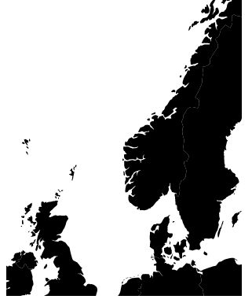

Creating maps with d3
Creating maps with d3 is really simple and it only takes a few lines of code.
d3.js, created by Mike Bostock, is awesome for visualizations and it makes creating beautiful and customized maps as easy as it gets.
This post teases some of the introductory steps I taught in a workshop at FOSSGIS 2015.
This is the most basic example of a map based on geojson data:
width = 300;
height = 400;
projection = d3.geo.mercator().scale(600).translate([width / 2, height / 2]).center([5, 70]);
path = d3.geo.path().projection(projection);
svg = d3.select("#map").append("svg").attr("height", height).attr("width", width);
countries = svg.append("g");
d3.json("data/eu.geojson", function(data) {
countries.selectAll('.country')
.data(data.features)
.enter()
.append('path')
.attr('class', 'country').attr('d', path);
});
D3 takes care of all the calculations for you. It has predefined projections (mercator in this example) and calculates the svg path for you.
projection = d3.geo.mercator().scale(600).translate([width / 2, height / 2]).center([5, 70]);
This line creates a new mercator projection for us. To center the map inside the bounds of the element we set the translate to half the width and half the height, otherwise the center will be in the bottom right corner. The scale factor corresponds linearly to the distance between projected points. The default scale value is 1,000 anything smaller will shrink the map, anything larger will expand it.
path = d3.geo.path().projection(projection);
The path generator takes the projected 2D geometry and formats it appropriately for SVG or Canvas.
countries.selectAll('.country')
.data(data.features)
We now select all elements inside the created svg which have the class country and bind them to the GeoJSON features.
.enter()
.append('path')
.attr('class', 'country').attr('d', path);
We select all the elements for the data and add new elements of type path to the group, add the class country and set the d attr to the path generator output for that feature.
You can learn more about how selections work in D3 here and in the presentation of this workshop.
Result
The result would look something like this:

Workshop
At FOSSGIS 2015 in Münster I gave a workshop going a little deeper into what’s possible.
These were the topics I covered in the workshop:
- Creating a simple map from both geojson and topojson
- Changing the projection of the map
- Adding interaction to the map
- Creating a tooltip
- Adding mouseover effect
- Creating a tooltip
- Creating a choropleth map
- adding labels
Self starters can just go and dive into the material to try it out on their own. You can find all the challenges and solutions here and the presentation is available here.
If you are interested in having this or more advanced workhops given at your organization don’t hesitate to get in touch.
Also feel free to contact me with questions and corrections.